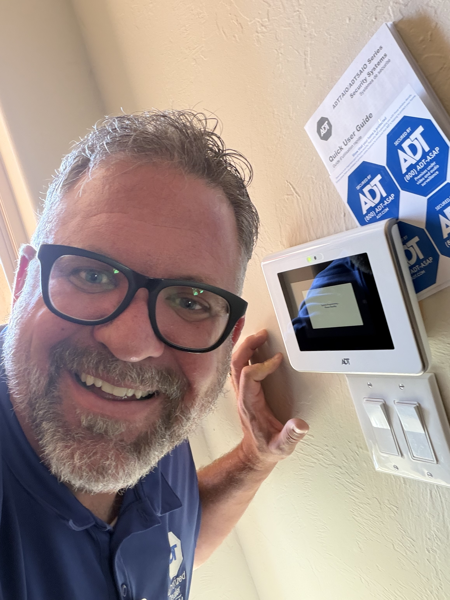
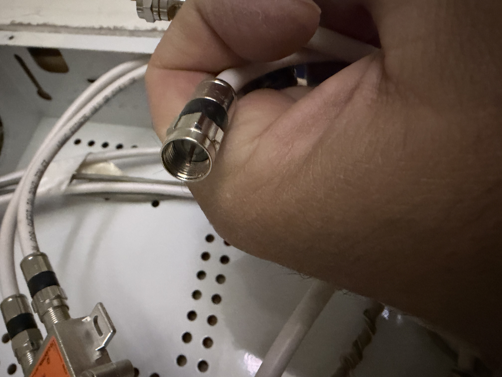

Security System & Camera Installation – Albuquerque, NM
Completed a residential security installation in Albuquerque, New Mexico including security cameras, intrusion protection, life safety devices, and low-voltage wiring improvements.

Project Summary
- Residential security system installation
- Security cameras
- Life safety protection
- Low-voltage wiring
- Cable run installation
- System setup and customer walkthrough
Installation Photos

Professional installation and final system setup.

Low-voltage wiring and network infrastructure work.

New cable run and termination work completed during installation.
Customer Review
★★★★★
"Joe the ADT technician was so knowledgeable and helpful with setting up our security system and cameras. Very professional and accommodating to our needs with how we wanted our system set up. We are very pleased and satisfied with our system. Thank you Joe."
— Fabian & Lori Lopez
Need Security Installation in Albuquerque?
Southwest Security & Automation provides residential security system installation, security cameras, doorbell cameras, smart home integration, and life safety devices throughout Albuquerque, Santa Fe, Farmington, Durango, and the Four Corners region.
Call or Text: 505-331-7834
Email: joe@swsa.ai